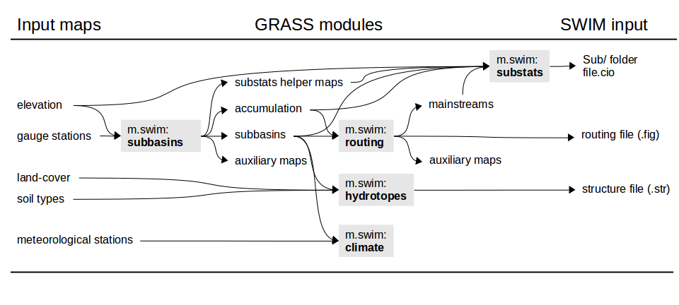

Installation
Download the modules
or clone the git repository from the cluster SWIM directory like this:
git clone /data/swim/preprocessing/m.swim.git
Then copy the scripts to your GRASS addons script directory. On linux this should be as easy as this in an open GRASS session:
cp m.swim.* $GRASS_ADDON_PATH/scripts/And the manual pages:
cp doc/* $GRASS_ADDON_PATH/docs/html/Make sure $GRASS_ADDON_PATH is set to something sensible and that the $GRASS_ADDON_PATH/scripts/ and $GRASS_ADDON_PATH/docs/html/ directories actually exist. If this is the first addon you are installing, they might be missing.
Windows
Under Windows the you will need to add the .py extension to the m.swim.* scripts to work.If the installation doesnt work, the scripts also work on their own (but probably
only in text mode). Launch them like a python script like this (to open the text based help):
python m.swim.subbasins.py --help
Using GRASS on the PIK cluster
If you don't want to use them locally, use the GRASS7 cluster version with the modules preinstalled. Use a direct connection to the cluster and make sure your X Window is set properly (otherwise don't expect any GUI windows to pop up). Then load the environment variables like this:source /home/wortmann/src/grass7/externalstart...and you are good to go.
Developing and debugging
PIK cluster users can use the git repository on the cluster to make changes to the m.swim.* code. Here is a quick HOWTO.Using the GUI
The m.swim.* modules (like any other GRASS module) can be either used as a script command or to open a GUI widget. On the GRASS command line, type the following to open them:m.swim.subbasin &If you want to also set arguments on the command line and still open the GUI, just add a --ui flag. E.g.:
m.swim.hydrotopes &
m.swim.routing &
m.swim.substats &
m.swim.subbasin elevation=elevation@PERMANENT stations=stations upthresh=2 --ui &
Here are some screenshots of the GUI:
The m.swim.subbasins GUI in the subbasin design tab.

The routing network (red) plotted with the subbasins (black) and the mainstreams (blue).
More screenshots:
m.swim.routing GUI, subbasin table, m.swim.substats GUI, help page
{kind=link}
To view your output you will have to open the GRASS wxPython GUI if you havent already done so. Here is the manual: GRASS70 GUI
Help pages
All GRASS manuals come with a manual page as the last tab in the GUI or you can find them here:
m.swim.subbasins
m.swim.hydrotopes
m.swim.routing
m.swim.substats
Prerequisits
- the DEM must be slightly larger then the entire topographical catchment, by one cell in each direction to be precise. Using a precut DEM is therefore not advisable, but this can be overcome by adding an 'a' to the rwatershedflags in the m.swim.subbasins (this might lead to errors later on though).
- the stationthresh in the m.swim.subbasin module should be slightly smaller than the drainage area of the station with the smallest drainage area. If stations don't produce the expected catchment area, they are most likely not snapped to the appropriate
stream. Moving these stations closer to the exact stream location will avoid this.
- the location's database should be SQLite (check with db.connect -p)
Workflow and map dependencies

Setting up a SWIM project
Create a new mapset and set region:g.mapset -c mapset=subbasins
g.region rast=elevation@PERMANENT
Stations
Create a stations point vector map:echo "x|y|name|subbsize
640579|215607|outlet|0.1
640388|216617|headwater|0.05" > stations.dat
v.in.ascii input=stations.dat out=stations x=1 y=2 columns='x int, y int, name varchar(20), subbsize double' skip=1
Subbasins
Make simple subbasins (default output arguments):m.swim.subbasins elevation=elevation@PERMANENT stations=stations upthresh=0.1 subbasins=subbasinsIn addition to the subbasins vector and raster map, this also produces catchment raster and vector maps, accumulation, drainage, streams, slopesteepness and slopelength rasters (as needed by the subsequent m.swim.* modules) by default.
Subbasins with varying subbasin thresholds and defined lower threshold:
m.swim.subbasins elevation=elevation@PERMANENT stations=stations upthreshcolumn=subbsize lothresh=0.001 subbasins=subbasins
Hydrotopes
Calculate hydrotopes with the subbasins, landuse and soil raster maps:m.swim.hydrotopes subbasins=subbasins landuse=landuse@PERMANENT soil=soils@PERMANENT strfilepath=mypro.str hydrotopes=hydrotopesAlternatively, contours (either as interval or list of breaks through the controus argument; or as a raster map through the contourrast argument) and more maps can be used to further subdevide the hydrotopes:
m.swim.hydrotopes subbasins=subbasins landuse=landuse@PERMANENT soil=soils@PERMANENT -c contours=50 \This implicitly creates a raster called contours and one called hydrotopes (as default names given for the hydrotopes and contourrast arguments).
elevation=elevation@PERMANENT more=geology@PERMANENT strfilepath=Input/mypro.str
Routing
Calculate the routing structure, routing network and mainstreams (the output defaults are: mainstreams=mainstreams, routingnet=routingnetwork, outlets=subbasinoutlets, inlets=subbasininlets; which can also be set explicitly):m.swim.routing subbasins=subbasins accumulation=accumulationOr set the -c flag to include the centroids in the routing network:
m.swim.routing -c subbasins=subbasins accumulation=accumulationCheck routing structure and write SWIM routing file (the --o overwrite is necessary as the mainstreams are recreated):
m.swim.routing -r subbasins=subbasins figpath=mypro.fig --oBoth these steps can also be executed at once (but may result in an error if the there are too many outlets):
m.swim.routing subbasins=subbasins accumulation=accumulation figpath=Input/mypro.fig
Subbasin statistics
Create the subbasin statistics files in a Sub folder and the file.cio in the projectpath with all default input (mainstreams, drainage, accumulation, stp and sl also have default values but included here to emphasise that they are needed as input):m.swim.substats subbasins=subbasins projectname=mypro projectpath=. elevation=elevation@PERMANENT \When recalculating or changing parameters, the calculation can be accelerated by setting chl, chs, chd, chw explicitly:
mainstreams=mainstreams drainage=drainage accumulation=accumulation stp=slopesteepness sl=slopelength
m.swim.substats subbasins=subbasins projectname=mypro projectpath=. elevation=elevation@PERMANENT \
delay=geology@PERMANENT chl=mainChannelLength chs=mainChannelSlope chd=channelDepth chw=channelWidth
Additional files
The following files/folders are not written by any of the modules and will have to be copied into the projdir from elsewhere:Input/
clim1.dat, clim2.dat
mypro.bsn
mypro.cod
runoff.dat
wstor.dat
crop.dat
cntab.dat
Soil/soil*.dat
soil.cio
wgen.dat
mypro.bsn
mypro.cod
runoff.dat
wstor.dat
crop.dat
cntab.dat
Soil/soil*.dat
soil.cio
wgen.dat
Output/
Res/
GIS/
Flo/
GIS/
Flo/
GRASS best practice
Region
- always double check the current region settings using g.region -p
- save your default region by setting the region with the -s flag in the PERMANENT mapset. This allows you to easily revert to it using g.region -d and all new mapset you create are set to this region by default
- create a raster (and vector) that defines your Region of Interest ( ROI). This allows you to crop all imported maps to this or limit the computation to these cells by setting r.mask ROI
Mapsets
- create more mapsets rather then filling one or the PERMANENT mapset up with too many maps. Think of them as folders in your GRASS database and subdivide your work accordingly. The PERMANENT mapset should only hold the most basic maps you need to access a lot, e.g. elevation, ROI, country_boundaries.
Workflow
- as GRASS' great strength is it's 'scriptability', make sure to 'save' the commands you used in a text file or shell script. Use the 'COPY' button in each command window to load the module's command into your cache and paste it. This will allow you to easily recreate your work later on and simultaneously provide a great manuscript for a potential 'Methods' article section ;)
- make use of the help pages and manual each module comes with